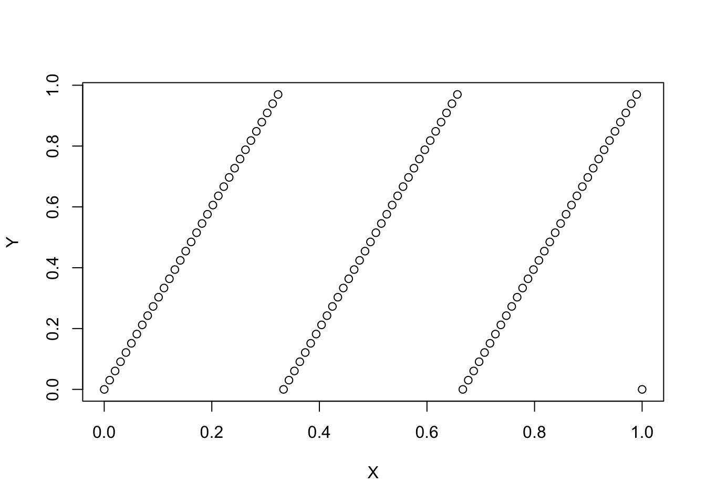
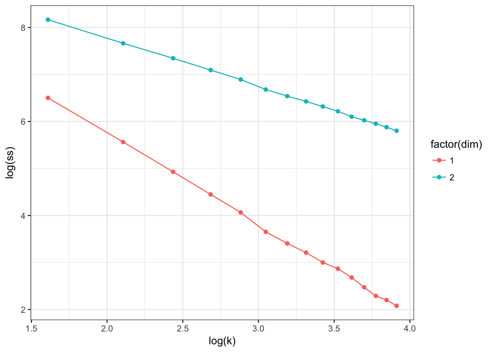

In this homework I ask you to create a function g(n,d) that returns a matrix of dimension (nx2) where each row in \([0,1]^2\) represents the coordinates of element in a set. This set, as n grows large needs to have dimension d where d is potentialy fractional in (1,2).
Let’s consider two simple example, and measure their dimensionality using kmean.
# A simple function that generates curve of length L
g1d <- function(n,l=1) {
X = seq(0,1,l=n)
Y = (l*X) %% 1
return(cbind(X,Y))
}
plot( g1d(100,3) )
# A simple function that generates the unit area
g2d <- function(n,l=1) {
X = runif(n)
Y = runif(n)
return(cbind(X,Y))
}Next we want to be able evaluate the dimension of the set.
# we cluster with different number of groups, we need to make sure that we have enough
# points in our set
dd = g1d(1e5,1)
rr = data.frame()
for (k in c(seq(5,50,l=15))) {
ks = kmeans(dd,centers = k,iter.max = 100,nstart = 10)
rr = rbind(rr,data.frame(k=k,ss=sum(ks$withinss)))
}
rr$dim=1
rrr = rr
fit1 = lm(log(ss) ~ log(k),rr)# we cluster with different number of groups, we need to make sure that we have enough
# points in our set
dd = g2d(1e5,1)
rr = data.frame()
for (k in c(seq(5,50,l=15))) {
ks = kmeans(dd,centers = k,iter.max = 100,nstart = 10)
rr = rbind(rr,data.frame(k=k,ss=sum(ks$withinss)))
}
rr$dim=2
rrr = rbind(rrr,rr)
ggplot(rrr,aes(x=log(k),y=log(ss),color=factor(dim))) + geom_point() + geom_line() + theme_bw()
fit2 = lm(log(ss) ~ log(k),rr)Getting the dimension of each of the set comes out from the regression coefficient of the log of the within sum of squares on the log of the number of cluster. Theory tells us that this coefficient is -2/d where d is the dimension. This is the way you should evaluate whether your function works. Throughout, you need to keep the number of points much larger than the number of group.
We see that we get the correct coefficient for our line and our unit square:
fit1##
## Call:
## lm(formula = log(ss) ~ log(k), data = rr)
##
## Coefficients:
## (Intercept) log(k)
## 9.630 -1.937fit2##
## Call:
## lm(formula = log(ss) ~ log(k), data = rr)
##
## Coefficients:
## (Intercept) log(k)
## 9.844 -1.032